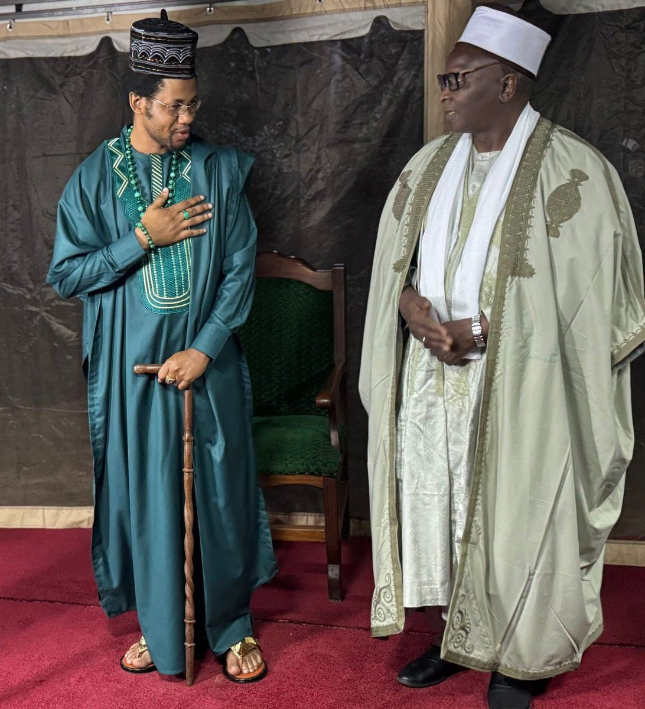
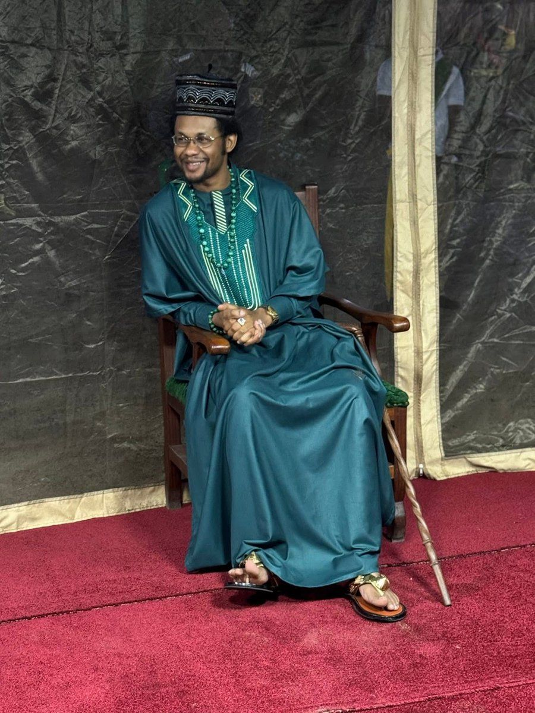
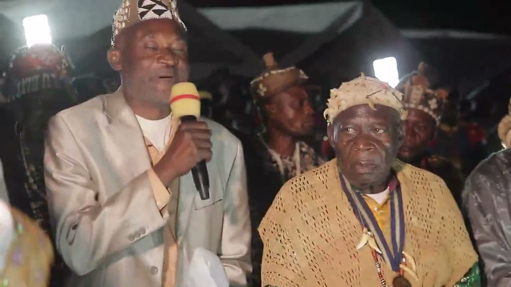

Biographie
Origines & Parcours
Samuel Nitufuidi Masambukidi Kulala Kwamakanda, plus connu sous son titre royal de Sa Majesté Masambukidi Ier, est une figure spirituelle, politique et culturelle majeure de la République Démocratique du Congo. Né un 30 juillet à Kinshasa, il est le Roi Divin du Bassin du Kongo depuis son couronnement solennel le 30 octobre 2025. Il est également le chef spirituel et représentant légal de l'Église Lumière du Christ au Congo (ELUCCO) et le fondateur du parti politique Réveil de la Conscience de Kama (RCK).
Il est le fils de Samuel Nitufuidi Masambukidi Kulala Kwamakanda, dit « Papa Samy » (1958–1999), prophète-fondateur de l'ELUCCO. Sa naissance, survenue à l'hôpital Maman Yemo de Kinshasa dans les années 1980, aurait été prophétisée par la prophétesse Marie Zomba, qui avait annoncé à son père la venue d'un enfant destiné à poursuivre son œuvre spirituelle. Selon la doctrine Masambukidiste, il est considéré comme la réincarnation spirituelle de son père, accomplissant la prophétie : « Ce que je n'ai pas pu faire, mon fils le fera. Moi, c'est lui. Lui, c'est moi. »
Éducation & Formation
Il a effectué ses études primaires à Zeka Metal, puis ses humanités au Lycée Mwinda et au Collège Ngoma à Kinshasa. Il a ensuite entrepris des études de droit à l'Université Protestante du Congo et à Bel Campus. Par la suite, il a poursuivi sa formation aux États-Unis, notamment à San Francisco, où il s'est spécialisé en musicologie et en théologie. Sa formation spirituelle s'est déroulée au sein de l'ELUCCO, sous la supervision directe de son père.
Héritage spirituel
L'héritage de Simon Kimbangu
La mission de Sa Majesté Masambukidi I s'inscrit directement dans la continuité de la prophétie de Simon Kimbangu, prononcée le 10 septembre 1921 à Mbanza Nsanda. Kimbangu y annonçait l'avènement d'un Grand Roi Divin (le Nkuatulendu) qui viendrait restaurer la dignité de l'homme noir et du peuple Kongo.
Sa Majesté Masambukidi I est reconnu non seulement par ses fidèles et de nombreux chefs coutumiers, mais aussi par des rois et reines de toute l'Afrique, comme l'accomplissement de cette prophétie. Sa reconnaissance comme Roi Divin dépasse ainsi largement sa communauté pour embrasser une dimension panafricaine. Il incarne les trois pouvoirs sacrés de la tradition Kongo :
Nsaku
Axe Spirituel
La dimension sacerdotale, la connexion avec le divin et les ancêtres, le pouvoir de la parole sacrée.
Mpanzu
Savoir-faire
La maîtrise des connaissances, des arts, des sciences et des techniques, le génie créateur et la puissance de l'innovation.
Nzinga
Pouvoir Collectif
Incarné par la royauté, la capacité à unifier et diriger le peuple, le pouvoir temporel et politique qui assure la cohésion sociale.
Événement historique
Couronnement comme Roi Divin
« Ce que je n'ai pas pu faire, mon fils le fera. Moi, c'est lui. Lui, c'est moi. »
— Samuel Nitufuidi Masambukidi Kulala Kwamakanda (Papa Samy), Prophétie fondatriceLe 30 octobre 2025, lors d'une cérémonie solennelle à Kinshasa, il a été couronné Roi Divin du Bassin du Kongo, prenant le titre de Sa Majesté Masambukidi Ier. Cet événement historique a réuni de nombreuses autorités coutumières, des rois africains et des dignitaires spirituels, symbolisant une volonté d'unité culturelle et de renaissance des valeurs ancestrales.
Ce couronnement marque la restauration spirituelle du Royaume Kongo, en écho aux figures historiques comme Kimpa Vita. La cérémonie a été documentée et suivie par la communauté Masambukidiste au Congo et dans la diaspora mondiale.



Engagement politique & diplomatique
Le Parti RCK & la Médiation Internationale
1er mai 2023
Fondation du parti Réveil de la Conscience de Kama (RCK)
Lancement officiel au stade des Martyrs de la Pentecôte à Kinshasa. Le RCK prône l'autodétermination africaine, l'indépendance spirituelle et le retour aux valeurs ancestrales (Maât) dans la gestion publique.
2022 — Séoul
Sommet Universel de la Paix
En qualité d'Ambassadeur Universel de la Paix, Sa Majesté Masambukidi I intervient comme médiateur lors du Sommet Universel de la Paix à Séoul, Corée du Sud.
28 juin 2025 — Paris
Intervention à l'Assemblée nationale française
À l'invitation de la députée Maud Petit, participation à un colloque à l'Assemblée nationale française portant sur la paix entre la RDC et le Rwanda.
30 octobre 2025 — Kinshasa
Couronnement comme Roi Divin du Bassin du Kongo
Cérémonie solennelle à Kinshasa, présidant le retour de la royauté spirituelle Kongo, réunissant autorités coutumières, rois africains et dignitaires.
Œuvre artistique & sociale
Musique, Littérature & Action Sociale
Professeur de musique, Sa Majesté Masambukidi I dirige la Fanfare Masambukidi (FAMAS) et l'Orchestre Harmonie Masambukidi (créé en 2018). Sa discographie comprend six albums, dont Vérité (2017) et Mokili (2022). En tant qu'auteur, il a publié l'ouvrage Nouvelle vérité, tome 1 le 28 avril 2019.
Il a fondé plusieurs structures sociales, notamment des écoles, des centres hospitaliers et la chaîne de télévision panafricaine RTMAS (Radiotélévision Masambukidi).
Distinctions & Reconnaissances
Honneurs officiels
Ambassadeur Universel de la Paix
2016 — Reconnaissance internationale pour son action en faveur de la paix et du dialogue des peuples.
Chevalier de la Paix
2020 — Titre conféré pour ses efforts de médiation et de réconciliation sur le continent africain.
Père de l'Indépendance Spirituelle en RDC
2021 — Reconnaissance de son rôle fondateur dans la renaissance de la spiritualité africaine en RDC.
Figure emblématique pour le développement de l'Afrique
Budapest, 2022 — Reconnaissance internationale pour son engagement panafricain.
Faits documentés
Ce que disent les sources indépendantes
✔ Fondation du RCK : Le journal congolais L'Objectif a couvert le lancement officiel du parti Réveil de la Conscience de Kama (RCK) par Samuel Masambukidi en 2023.
✔ Présence internationale : Sa Majesté Masambukidi I est intervenu en 2022 au Sommet Universel de la Paix à Séoul (Corée du Sud) en qualité d'Ambassadeur Universel de la Paix.
✔ Assemblée nationale française : Le 28 juin 2025, il a participé à un colloque à l'Assemblée nationale française à l'invitation de la députée Maud Petit, portant sur la paix entre la RDC et le Rwanda.
✔ Couronnement documenté : La cérémonie du 30 octobre 2025 à Kinshasa a été enregistrée sur vidéo et relayée par la communauté ELUCCO au Congo et dans la diaspora. La vidéo officielle est disponible sur YouTube.
✔ Biographie publiée : La biographie officielle Papa Masambukidi — Héritage, luttes et vision, rédigée par Merveil Hakeem Dianzenza, est disponible sur Amazon (ISBN : B0FVSRSFBY).
Voir aussi
Références & Liens utiles

Biographie officielle publiée
Papa Masambukidi
Héritage, luttes et vision
La biographie officielle du Roi Divin du Bassin du Kongo — rédigée par Merveil Hakeem Dianzenza, son chargé de protocole. 46 pages qui retracent le parcours de Sa Majesté Masambukidi I, de ses premières révélations à son intronisation historique à Kinshasa. Disponible sur Amazon.